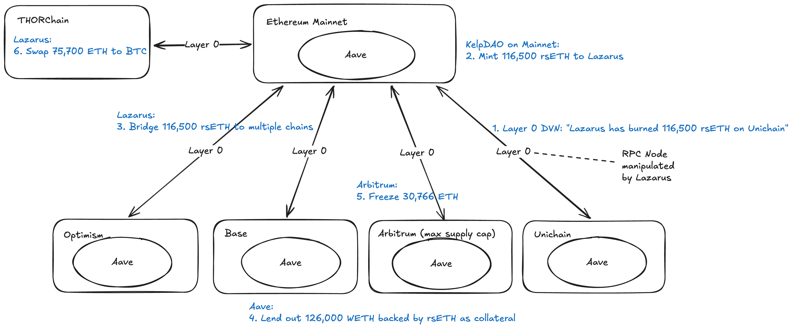

2026 年 4 月 18 日,流動性再質押協議 Kelp DAOLiquid Restaking Protocol流動性再質押協議EigenLayer 生態下的 LRT 發行方,使用者存入 ETH/stETH 換取流動性憑證 rsETH。 遭到攻擊。攻擊者攻破 LayerZeroOmnichain Messaging Protocol通用跨鏈訊息協議不是橋,是底層 sendMessage。rsETH 為 OFT(Omnichain Fungible Token),全鏈總量守恆只靠訊息驗證機制守門。 的 DVN 訊息驗證 → 在約 20 條鏈上同時鑄造無 ETH 背書的假 rsETH → 拿去 AaveDeFi Lending ProtocolDeFi 借貸龍頭本次事件中以 rsETH 為抵押品被借走 126,000 WETH 真資產;由於 rsETH 失去錨,Aave 池子留下不可回收壞帳。 當抵押借走 126,000 WETH 真資產 → 洗成 BTC,留下 Aave $177M 壞帳與 rsETH 持有者承擔損失。 是 2026 年迄今規模最大的加密貨幣竊案。
流動性再質押協議(Liquid Restaking) — EigenLayer 生態系下的 LRT 發行方
通用跨鏈訊息協議(Omnichain Messaging) — 不是橋,是底層 sendMessage
_lzSend() / _lzReceive()DeFi 龍頭借貸協議 — 抵押借貸 + 自動清算的標準範本

一次價值 2.9 億美元的跨鏈攻擊，沒有一行 LayerZero 合約被入侵、沒有一把 DVNDecentralized Verifier Network去中心化驗證者網路LayerZero V2 的訊息驗證角色。每個 OApp 可自訂一組 DVN 核實跨鏈訊息真偽。可由 LayerZero Labs、第三方、或應用自營。 私鑰被偷。攻擊者繞過整個協定層，直接下毒到下游 RPCRemote Procedure Call區塊鏈節點對外介面off-chain 服務讀寫鏈上資料的入口。RPC 回傳本身沒有密碼學驗證，只能選擇信任或不信任整個節點。 節點，再用一場 DDoSDistributed Denial-of-Service分散式阻斷服務攻擊傳統是 availability 攻擊，但這次被當成流量重導向武器 —— 打掉好節點，流量就會自動切換到壞節點。 把被下毒的節點推到驗證者面前。
LayerZero V2 的安全架構是模組化的。協定本身不決定訊息如何被驗證， 而是把決定權交給接入的應用。每個 OAppOmnichain Application跨鏈應用在 LayerZero V2 上發行的跨鏈應用，例如 rsETH 這類 OFT (Omnichain Fungible Token)。每個 OApp 自己決定使用哪些 DVN、幾個簽名才算有效。 自訂一組 DVN，由它們負責核實跨鏈訊息的真偽。
LayerZero 的官方建議是 multi-DVN with redundancy：例如 2-of-3 或 3-of-5， 任何一個 DVN 被攻破都不足以偽造訊息。但這是建議，不是強制。
KelpDAO 的 rsETH UnichainUniswap L2 RollupUniswap 的 L2 網路這次事件的來源鏈。攻擊者偽造了聲稱「從 Unichain 發出」的訊息，但 Unichain 上實際沒有對應 burn 交易。 → Ethereum 路由採用了 1-of-1 DVNSingle-Verifier Configuration單一驗證者配置整條訊息路徑只需要 1 個 DVN 簽章就視為有效。這是 LayerZero V2 Quickstart 範本的預設配置，約 40% 協議目前採用。一旦該 DVN 被欺騙，沒有其他驗證者能提出異議。， 以 LayerZero Labs 為唯一驗證者 —— 這是本次事件的第一塊骨牌。
Kelp rsETH 採用 lock-and-mint 橋：Ethereum 鎖、其他鏈鑄。有一條不變式應該永遠為真 —— Ethereum 上鎖的量必須 ≥ 所有遠端鏈鑄出的總量。 攻擊後，這條不變式被撕裂了。
noncePacket Sequence Number封包序號LayerZero 每條跨鏈訊息有遞增 nonce。來源鏈 outbound nonce 與目的鏈 inbound nonce 應該一一對應。
308攻擊者首先設法取得 LayerZero Labs DVN 使用的 RPC endpoint list。 官方沒有揭露取得管道 —— 可能是 social engineering、或是運維流程中的資訊洩漏。
兩個獨立、跑在不同 cluster、彼此無直接連線的 RPC 節點被攻破。
攻擊者替換了
op-gethOptimism Geth ClientOP Stack 執行層節點軟體Unichain 是 OP Stack 鏈，底層用 op-geth 作為執行層節點。攻擊者把 binary 換成惡意版本，就能控制節點對外回應內容。
的執行檔，植入惡意版本。
但 LayerZero 的 DVN 本身沒有被入侵 —— least-privilegePrinciple of Least Privilege最小權限原則DVN instance 與 RPC 節點被隔離，即使 RPC 被攻破也無法直接存取 DVN 的簽章金鑰。 的設計讓 DVN 與 RPC 層完全隔離。
這是整起攻擊最精巧的一層。惡意 binary 不是對所有請求回傳假資料， 而是根據請求來源 IP 做分流 —— 同一個節點，兩張臉。
LayerZero 的 DVN 同時查詢兩類 RPC：自營的 internal 節點與第三方的 external 節點。 只污染兩個還不夠 —— 其他節點會講實話，形成矛盾，DVN 就會拒絕簽章。
攻擊者對未被污染的 RPC 發動
DDoSDistributed Denial-of-Service分散式阻斷服務攻擊大量垃圾流量灌爆目標節點，使其無法正常回應合法請求。傳統是 availability 攻擊，但在這次事件中被當成流量重導向武器 —— 打掉好節點，系統就會自動切換到壞節點。。
健康節點被打到無法回應，DVN 的
failoverAutomatic Failover Mechanism自動故障切換機制當主節點無法回應時，系統自動切換到備援節點。設計初衷是維持 availability，但在這次攻擊中變成武器 —— 健康節點被打癱，失敗切換就把流量導向還能回應的被污染節點。
機制啟動，把流量導向剩下還「看起來」正常的節點 —— 被污染的那兩個。
DVN 確認了從未在 Unichain 上發生的交易。偽造封包 nonce 308 在 Ethereum 被
PayloadVerifiedLayerZero V2 Event訊息驗證通過事件LayerZero 在目的鏈上發出的事件，表示封包已通過所配置 DVN 的驗證門檻，可以被執行。
→ committed → delivered，Ethereum
OFT adapterOmnichain Fungible Token Adapter跨鏈代幣鎖定適配器Ethereum 上的 lock-and-mint 適配器合約。地址：0x85d456b2...98ef3
餘額從 116,723 rsETH 掉到 223 rsETH。
攻擊完成後，惡意 binary 執行 self-destruct：停用 RPC、刪除 binary、清除本地 log 與 config。
攻擊者沒有破解任何密碼學原語、沒有偷到任何私鑰、沒有找到合約漏洞。 他們做的是把 DVN 依賴的「事實來源」偷偷換掉。
攻擊成功不是因為單一漏洞。LayerZero 協定、DVN instance、key management 都沒被攻破。 真正出問題的是信任邊界沒被充分劃清的四個層次。
所有 off-chain 服務都依賴 RPC 讀取鏈上狀態。RPC 本身是非加密驗證的資料來源 —— 你只能選擇信任或不信任整個節點。
傳統監控假設「資料供應者對所有消費者講同一套故事」。 當惡意節點能基於 IP 分流回應，外部比對機制就失效了。
多 DVN 架構本該是最後一道防線。Kelp 選了 1/1 配置， 讓 LayerZero Labs 單點成為唯一仲裁者。
冗餘設計原本為了 availability，但當 failover 是「自動、無驗證」時， 打倒好的，就會被切換到壞的。
事件後 48 小時內，LayerZero 與 KelpDAO 在公開場合互相指責。 雙方說法都有根據，但指向的是不同層次的責任。
密碼學再強，如果驗證者讀到的「鏈上事實」來自可被替換的
binaryExecutable Binary執行檔編譯後的可執行程式檔，例如這次事件中被替換的 op-geth。攻擊者把節點的 binary 換成惡意版本，就能在不被察覺的情況下控制節點的對外行為。，
加密機制就被架空了。
provenanceData Provenance資料來源鏈一份資料從產生、流經哪些處理者、到最終被使用的完整歷程紀錄。有 provenance 才能追溯「這個結論憑什麼成立」。這次事件中 DVN 讀取的「鏈上事實」沒有可驗證的 provenance — 它只能相信 RPC 節點「現在告訴我的是真的」。
的可驗證性必須延伸到資料入口
。
多個 RPC 之間沒有相互核實、多個 DVN 之間沒有
quorumQuorum-based Verification多方共識門檻要求 N 個驗證者中至少 K 個達成一致，才認定訊息有效（例如 2-of-3、3-of-5）。LayerZero 的 multi-DVN 建議就是 quorum 模型。KelpDAO 的 1-of-1 等於沒有 quorum — 只要欺騙唯一的那個就過關。
dissentDissent Detection異議偵測當多方驗證者之間出現不一致時，系統主動偵測並拒絕簽章的機制。只有 redundancy 沒有 dissent detection，等於多個備援都乖乖跟著錯的來源走，不會舉手說「我看到的不一樣」。
偵測 ——
redundancy 只能提供
availabilityAvailability可用性系統「還活著」、能繼續回應請求。壞了一個就切換到備援，服務不中斷。但「能回應」不等於「回應是正確的」。，
無法提供
integrityIntegrity完整性 / 正確性回傳的資料真的是原始、未被竄改的。需要密碼學驗證或多方比對才能保證。這次事件中備援切過去後 RPC 「還能回應」（availability 沒事），但回應是假的（integrity 完全失守）。。
如果官方
QuickstartOfficial Starter Template官方快速入門範本LayerZero V2 OApp Quickstart 是新接入者的起始樣板。該範本預設配置為 1/1 DVN，也就是單一驗證者。KelpDAO 反駁就是抓這點：約 40% 的現役協議都沿用此預設配置。
的預設是 1/1，不能單純怪應用端沒照建議。
在設計跨鏈訊息或
oracleOracle外部資料餵送器把鏈下資料（價格、事件、跨鏈狀態）送上鏈的服務。DVN 本質上就是跨鏈訊息的 oracle。oracle 的可信度直接決定了依賴它的合約是否安全。
路徑時，預設配置就是責任配置。
RPC、
indexerBlockchain Indexer鏈上資料索引服務把原始鏈上資料整理成可查詢的結構化資料庫（例如 The Graph、LayerZero Scan）。DApp 和監控系統大多依賴 indexer 取代逐筆查 RPC。這次事件中 LayerZero 自己的 Scan indexer 也被瞞過 — 因為它們也是從 RPC 拉資料的。、
oracle 這些「周邊」服務，實際上扛著整個系統的信任核心。
未來的跨鏈設計，需要思考如何讓這些元件的行為本身可被密碼學驗證。
假 rsETH 流向 ~20 條鏈,但兩條鏈在事件中扮演完全不同的角色 —— Unichain 是「毒源入口」,Arbitrum 是「主出血口 + 主救援點」。
$123M 與 $230M 兩個數字都是毛壞帳 — 差異不在金額本身,而在「壞帳由誰吸收」。 兩者是互斥的處置路徑,而非高低區間。
真資產回收進展(共借走 ~126,000 ETH)
| 狀態 | 去向 / 機制 | 金額 (ETH) | 估值 |
|---|---|---|---|
| ✅ 已凍結 | Arbitrum Security Council 動用 Emergency Upgrade | 30,766 | ~$71M |
| ✅ 已清算 | 第三方 MEV 清算人(Aave / Compound 部位) | ~14,168 | ~$33M |
| ❌ 永久流失 | THORChain → 442 BTC,進混幣器後實質不可追 | ~75,700 | ~$175M |
| ⚠️ 待觀察 | 仍在攻擊者錢包未動,鏈上分析者持續監控 | ~5,366 | ~$13M |
由 Aave 主導發起,以產業集資填補 rsETH 抵押缺口,可能成為「系統性風險共擔」的產業範本。
| 時間 (UTC) | 事件 |
|---|---|
| 2026-04-18 18:52 | 攻擊開始,LayerZero Verifier 接受偽造訊息 |
| 2026-04-18(後續) | 攻擊者在 Aave 以假 rsETH 借出 ~$190M |
| 2026-04-19 | CoinDesk 報導 2026 年最大加密攻擊,$292M 被盜 |
| 2026-04-20 | LayerZero 發布事後分析,將攻擊歸因於 Lazarus Group |
| 2026-04-20 | Kelp DAO 反駁 LayerZero,指出 1/1 DVN 是其預設 |
| 2026-04-20 | DeFi TVL 兩日蒸發 $13.21B,Aave 存款流失 $8.45B |
| 2026-04-21 | Arbitrum Security Council 凍結 30,766 ETH(~$71M) |
| 2026-04-21 | 攻擊者開始將 ETH 分批轉入新錢包 |
| 2026-04-21 ~ 22 | ~75,700 ETH 透過 THORChain 換成 ~442 BTC |
| 2026-04-23 | Aave 啟動 DeFi United,Stani Kulechov 個人捐 5,000 ETH |
| 2026-04-24 | Lido、Mantle、Aave DAO 紛紛提案投入援助 |
| 2026-04-25 | DeFi United 累計 ~69,642 ETH(~$161M),rsETH 價格回穩 |
| 2026-04-26 | Arbitrum DAO 提案併入凍結 30,765 ETH;DeFi United 達標 86.2%(~$224M),101,610 錢包參與 |